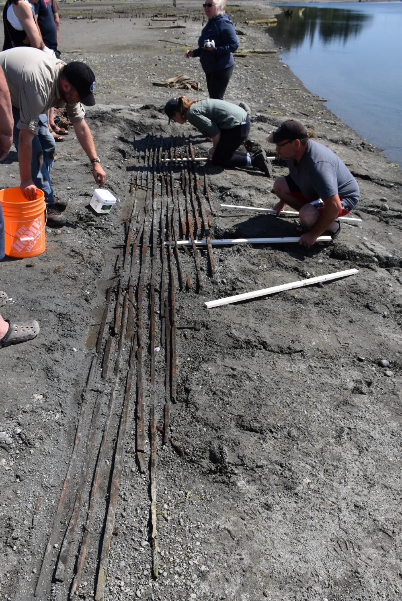
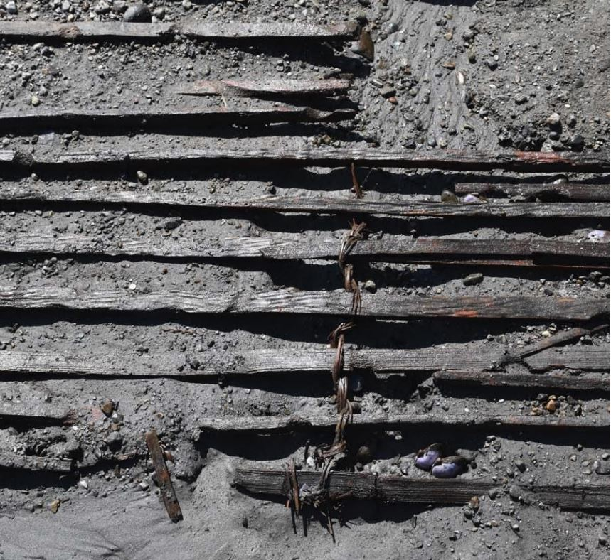
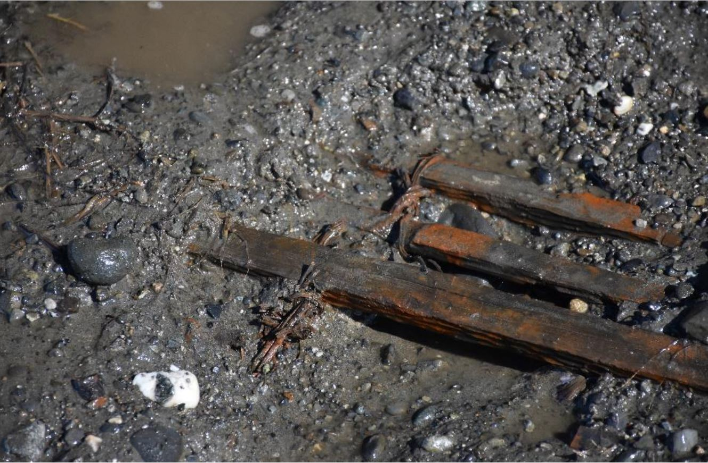

Wooden fish weirs in wet sites on our shores are the best preserved examples in North America, and may be the largest prehistoric archaeological feature on the Northwest Coast. These very fish traps were utilized for hundreds of years, trapping herring and salmon to feed the community and for trade with other nations.
Stakes made of predominantly young spruce and hemlock stretch the length of the estuary on both shorelines, to the extent of Goose Spit and Royston. Radiocarbon dates from a chevron-shaped fish trap has been dated to the late 16th century. The 16th century lasted from 1500 to 1600.
Panels were inserted between the wooden stakes, which were hammered into the silty sand using large boulders, in order to corral and entrap fish within a chevron or heart design.
Above is a 6 meter long fish weir panel, discovered on the beach in front of our main Village in 2017. It is the only one of its kind found in the area and is remarkably well preserved. Panels were comprised of some weaving components: The warp, the wheft, as well as twining. Using roots and branches, these long panels were lashed together.
Two radiocarbon dates derived from the weft elements of the panel indicate it was constructed in the late 14th century. The 14th century was a century lasting from 1300 to 1400.
The K'omoks First Nation has partnered with Simon Fraser University Archaeology to enage in two digs at the Puntledge River site, a traditional village of Pentlatch ancestors. Amidst the blackened charcoal earth and mounds of shell fragments, hundreds of carved stone artifacts have been found. These stones, coined "Pentlatch Pebbles", are so unique that the likes of which have only been found in two other places in the world. Common arifacts are bone point tools, Lithic (stone) tools, and most predominantly Fire Cracked Rock and flakes from the creation of tools.
These stones were found amongst the stratafied layers of soil and sediments. Archaeologists were able to date the stones by analyzing the surrounding charcoal, known as radiocarbon dating. Based on this dating technology, the shell midden began to form in this area around the year AD 375 while the top of the midden in this location dates to approximately AD 612.
Evidence has shown that these samples were taken from deposits of the floor of a house. These dates indicate that the house was likely in use around AD 700 or slightly later.